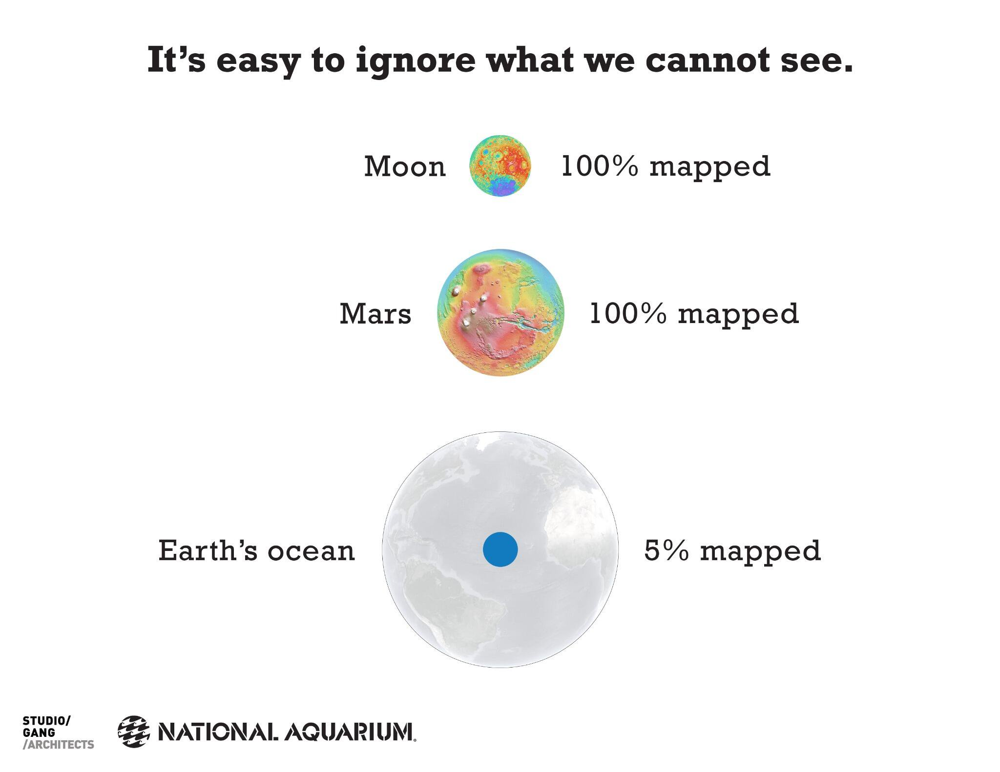

Mapping the deep, and the real story behind the “95% unexplored” oceans
At the end of this month, we will be running an update of our free Massive Open Online Course (“MOOC”) about “Exploring Our Oceans”, intended for anyone interested in finding out more about our watery world, with no previous background in science required.
One topic we’ll look at in Week 1 of the course, “A hidden landscape”, is how we map the ocean floor, and how much has been mapped at different levels of detail. So the publication of a new ocean floor map this week, created from satellite data by David Sandwell of Scripps Institution of Oceanography in San Diego and colleagues, is very timely.
We’re often told that we know more about the surface of Mars / the Moon / Venus (delete at whim) than the depths of the ocean, and that 95 percent of the ocean is “unexplored”. That makes for a great meme, and there’s a nice infographic out there on social media to illustrate it:

But it’s not quite the full story: in some ways, we have come much further than “five percent mapped”, but in other ways we still have far to go. It all comes down to what we mean by “explored”, and how we map the ocean floor. So let’s examine some of the facts behind the “95 percent unexplored” meme and those comparisons with our celestial neighbours.
The entire ocean floor has now been mapped at up to ~5 km resolution, which means we can see most features larger than ~5 km across in those maps. That’s the resolution of the new global seafloor map, which uses some nifty tricks with satellites to estimate the landscape of the seafloor, and even reveals some features of the Earth’s crust lurking beneath seafloor sediments. And the previous global map of the ocean floor, created using the same techniques and published in 1997, had a resolution of ~20 km.
Unlike mapping the land, we can’t measure the landscape of the seafloor directly from satellites using radar, because seawater blocks those wavelengths of electromagnetic radiation. But satellites can use radar to measure the height of the sea surface very accurately. And if there are enough measurements to subtract the effects of waves and tides, satellites can actually measure bumps and dips in the sea surface that result from the underlying landscape of the ocean floor.
Where there is a large underwater mountain or ridge, for example, the tiny local increase in gravity resulting from its mass pulls seawater into a slight bump above it. If instead there is an ocean trench, the weaker local gravity produces a comparative dip in the ocean surface.
It’s an astounding feat of precision measurement, involving lasers to track the trajectory of the measuring satellite, calibrations with local gravity measurements made by ships, and inevitably quite a bit of maths in processing the data. The new map uses data from the Cryosat-2 and Jason-1 satellites, and reveals features not seen in earlier maps using data from older satellites. You can explore the latest map for yourself here, including downloads to show it in Google Earth.
So we do actually have a map of 100 percent of the ocean floor at up to ~5 km resolution; in that sense, it is certainly not just “five percent mapped”. But that global map of the ocean floor is admittedly less detailed than maps of Mars, the Moon, or Venus, because of our planet’s watery veil.
NASA’s Magellan spacecraft mapped 98 percent of the surface of Venus at ~100 m resolution. The entire Martian surface has also been mapped at ~100 m resolution, and just over 60 percent of that planet has now been mapped at ~20 m resolution. Meanwhile, selenographers have mapped all of the lunar surface at ~100 m resolution, and now even at ~7 m resolution.
To map the ocean floor back home in greater detail, we have to use sonar instead of satellites. Multibeam sonar systems aboard ships can map the ocean floor at ~100 m resolution, but only in a track below the ship. Those more detailed maps now cover about 10 to 15 percent of the oceans, which is an area roughly equivalent to Africa in size. And along with older, single-beam echosounder data from ships crossing the ocean (which were the source of data for the earlier famous “World Ocean Floor Map” by Marie Tharp and Bruce Heezen), we have “soundings” for a total of perhaps around 20 percent of the ocean floor.
You can explore some of the recent shipboard multibeam map coverage for yourself at GeoMapApp: if you zoom all the way in on the map, you can the tracks of ships that have mapped areas at higher resolution than the satellite base map (but please don’t misinterpret the sometimes grid-like patterns of ship’s survey lines as the streets of Atlantis).
Mapping at the level of detail achievable by shipboard sonar systems still reveals plenty of surprises. The first phase of searching for Malaysian Airlines flight MH370 in the Indian Ocean, which has involved mapping from ships to plan future surveys by underwater vehicles, has revealed new seamounts and other features that were not visible on satellite-derived maps of the area.
And on a personal note, in 2009 I was aboard an expedition near the South Sandwich Islands in the Southern Ocean when our ship’s sonar revealed a seafloor crater, 4 km across and 1.6 km deep, that wasn’t on any satellite maps. We later found some very unusual deep-sea vents and a “whale fall” at the bottom of that crater too, but that’s a story for another time.
However, if we want to detect things just a few metres in size on the ocean floor, such as the mineral spires of deep-sea vents or the wreckage of missing aircraft, we need to take our sonar systems much closer to the seabed using underwater vehicles or towed instruments. At present, less than ~0.05 percent of the ocean floor has been mapped to that highest level of detail by sonar, which is an area roughly equivalent in size to Tasmania. And of course, actually to see the seafloor using cameras or our own eyes means getting even closer, using tools such as remotely operated vehicles or manned submersibles.
So the “95 percent unexplored” meme doesn’t really tell the full story of our exploration of the oceans. When it comes to having a large scale map, the ocean floor is perhaps not as unexplored as we might think, with 100 percent coverage at ~5 km resolution and around 10 to 15 percent coverage at ~100 m resolution. That 10 to 15 percent is similar in resolution to the current global maps of Mars and Venus.
But our exploration of the oceans depends on what we want to know about them. If our questions are “what does it look like down there?” or “what’s going on down there?”, then the area that has been “explored” is arguably even less than the ~0.05 percent mapped so far at highest resolution by sonar.
Philosophically, when it comes to exploring anywhere on our dynamic world, how and when do we decide that somewhere has “been explored”? Do we declare “mission accomplished” once we’ve seen a location for the first time? The local woods where I walk my dog look very different in winter compared with summer, with different species flourishing at different times. Should I have considered them “explored” after my first visit in just one season? Exploring our world starts with mapping, but perhaps doesn’t really have an end.
Jon Copley, October 2014